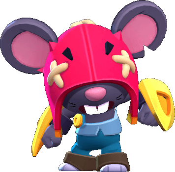

¿Quién es Moe?
Moe es una rata ciega que vivía en las alcantarillas de Starr Park hasta que, un buen día, Grom la encontró y la adoptó. Ahora forma parte del equipo de mantenimiento de Starr Park y usa su querida excavadora, Dora, para explorar los túneles subterráneos, además de dejar un poco de destrucción a su paso, cosa que pone a Ash de los nervios.
Moe es un brawler Mítico que tiene una salud moderada, un daño variable, un largo alcance y una velocidad de movimiento rápida. Su atributo también le permite cargar su súper cuando es lastimado. En su forma alternativa, tiene una velocidad de movimiento muy rápida, un daño muy alto y un alcance muy corto. La forma normal de Moe ataca lanzando piedras que explotan a mitad de camino y disparan 4 rocas más pequeñas en todas direcciones, que luego explotan al impactar y disparan 4 rocas más pequeñas en todas direcciones. Su súper lo hace excavar bajo tierra en una dirección determinada, transformándose en su forma alternativa, dañando a los enemigos en su camino y cuando excava en un radio grande, lanza enemigos al aire en el destino. La forma alternativa de Moe ataca mediante un ejercicio continuo en un rango corto. El súper de su forma alternativa lo transforma nuevamente en la forma normal de Moe.
|  |
NIVEL DE FUERZA 11 |
Sus gadgets
CAZATESOROS: Moe desentierra algunos objetos "prestados" que aumentan la velocidad de carga del súper en un 50% durante 5 segundos. |
DIAMANTE EN BRUTO: Moe pisa el acelerador de su excavadora, avanza una distancia corta, destruye los muros y empuja a los brawlers a su paso. |
Sus habilidades estelares
 |
AVALANCHA: Los ataques base de Moe rebotan una vez más. El alcance del ataque sigue siendo el mismo. |
 |
QUINTA MARCHA: Dora, la excavadora de Moe, se mueve más rápido al avanzar bajo tierra. |
 Braian Arancibia
Braian Arancibia Aya El Baarar
Aya El Baarar